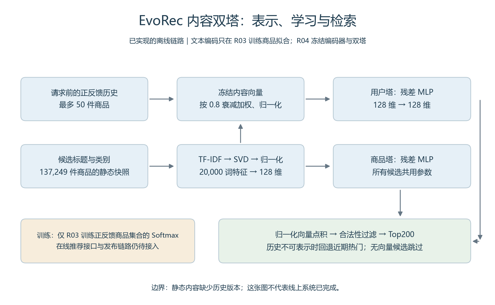
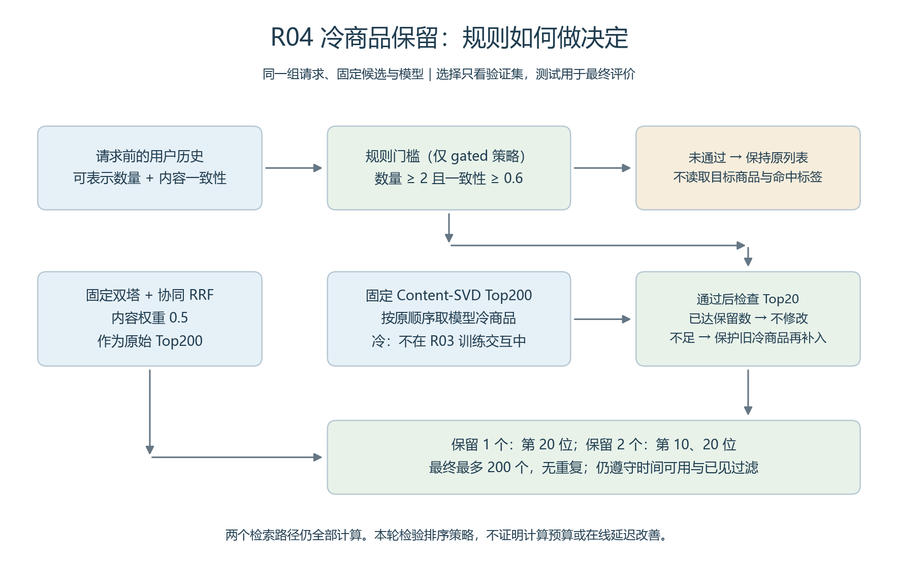
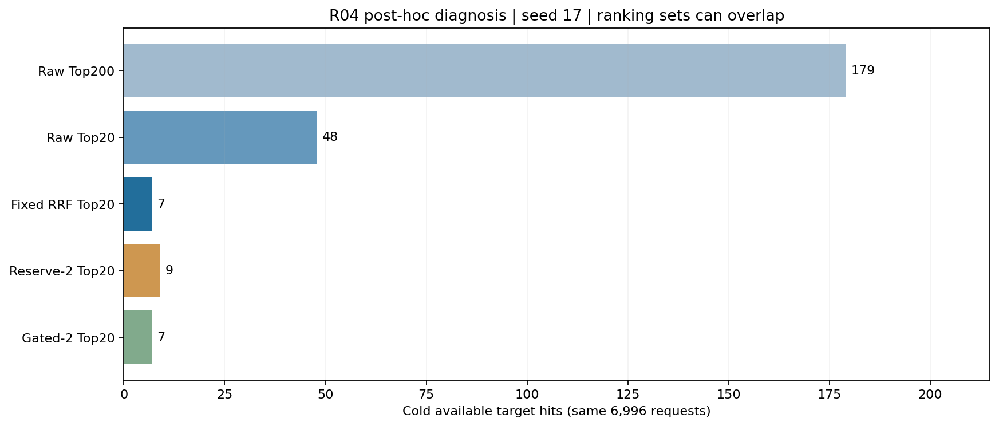
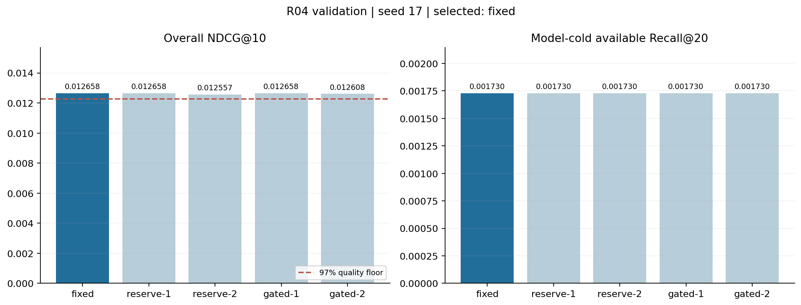
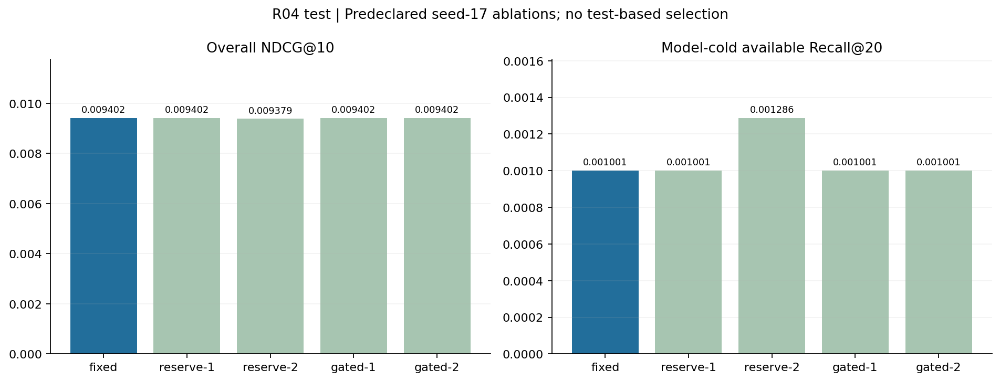
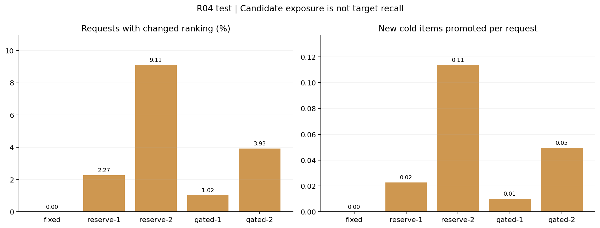

EvoRec 项目图册
10 张可追溯配图：模型结构、实验过程与策略取舍。数据来自本地已完成的实验；不同阶段的用户样本不同。
内容双塔结构与实现边界

图中为已运行的离线结构；R03 训练，R04 冻结复用。在线业务接入仍是计划。 SVG 矢量图冷商品保留与门控流程

五种策略在实验前固定。门控只读取历史信号；未跳过任一检索路径。 SVG 矢量图R04 冷商品落选位置分析

测试后诊断：比较同一批冷目标的命中位置；排序集合可能交叉，不是严格漏斗。 SVG 矢量图R02 序列模型训练曲线
 R02：39 轮、4 次训练。损失下降不保证验证指标持续改善。 SVG 矢量图
R02：39 轮、4 次训练。损失下降不保证验证指标持续改善。 SVG 矢量图R02 序列模型与统计基线
 R02 独立样本。三种子标准差不是置信区间；序列模型未超过强协同基线。 SVG 矢量图
R02 独立样本。三种子标准差不是置信区间；序列模型未超过强协同基线。 SVG 矢量图R03 内容双塔训练曲线
 R03：48 轮、4 次训练。按验证指标保留检查点；静态内容可用假设。 SVG 矢量图
R03：48 轮、4 次训练。按验证指标保留检查点；静态内容可用假设。 SVG 矢量图R03 整体排序与冷商品召回
 R03 独立样本。内容融合改善整体排序，但冷商品命中少于纯内容路径。 SVG 矢量图
R03 独立样本。内容融合改善整体排序，但冷商品命中少于纯内容路径。 SVG 矢量图R04 验证集策略比较

R04 冻结 R03 模型，使用新用户验证选择策略；红线为整体 NDCG 下限。 SVG 矢量图R04 测试集消融

固定 seed 17 的五种预登记策略；测试中的差异不用于回改选型。 SVG 矢量图R04 门控活动与冷商品曝光

改变列表的请求比例和新增冷商品位置数量，与目标命中率分别评价。 SVG 矢量图来源清单 · 项目实录